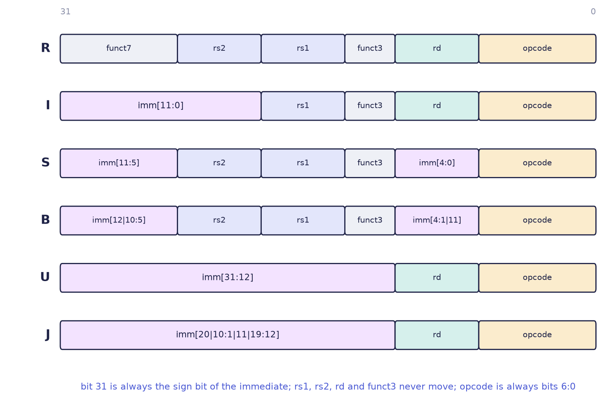
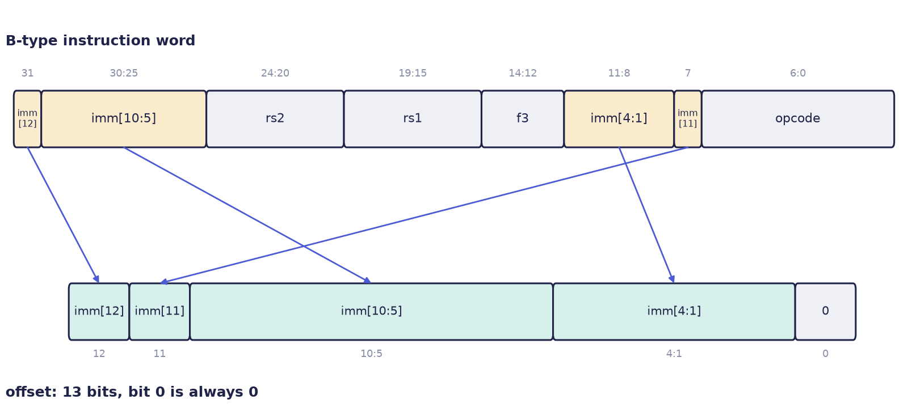

Chapter 8: RISC-V: The Instruction Set¶
An instruction set is the contract between the software you write and the hardware that runs it. This chapter introduces RISC-V, an open and modular instruction set that has become the standard vehicle for teaching computer architecture and is used in real products from sensors to servers. It explains what an instruction set architecture is and what "open" means, how RISC-V is built from a small base and optional extensions, the RISC design philosophy, the 32 registers and their conventional roles, and the six instruction formats, which you will learn to encode and decode by hand. We work with RV32I, the 32-bit base integer instruction set: the smallest complete core and ideal for learning.
8.1 What an instruction set is¶
An instruction set architecture (ISA) is the list of instructions that a processor understands, the registers it offers, how memory is addressed, and exactly how each instruction is encoded as bits. It is a specification, not a chip. Many different chips, from a tiny microcontroller to a 64-core server part, can implement the same ISA and run the very same program files. An ISA is like the standard for a power socket: any appliance built to the standard works in any socket built to it, whoever made either one.
RISC-V (pronounced "risk five") is such a specification, with one radical difference: it is open and free. Anyone may design, manufacture and sell a RISC-V processor without paying a licence fee or asking permission. Compare the position of other families.
| ISA | Who controls it | To build a chip that runs it |
|---|---|---|
| x86 | Intel and AMD | in effect, you cannot |
| Arm | Arm Ltd. | buy a licence and pay royalties |
| RISC-V | RISC-V International, a non-profit | just do it: no fee, no permission |
RISC-V was born at the University of California, Berkeley, in 2010, as a clean-slate design for teaching and research.
What open means
"Open" here means that the specification is freely usable, like an open standard such as TCP/IP or USB. It does not mean that every implementation is open-source silicon: companies may still sell closed chips that implement the ISA. What is guaranteed is that the encoding and the meaning of the instructions belong to everyone.
Why does an open ISA matter?
- No lock-in. A start-up, a university or a national laboratory can build a processor without negotiating a licence.
- Modularity. You implement only what you need, so a tiny sensor chip and a server processor share one base.
- Stability for learning. The base ISA is small, frozen and completely documented, so what you learn stays true.
- A shared ecosystem. Compilers (GCC, LLVM), operating systems (Linux) and tools all target one open target, so every chip gets software for free.
8.2 A small base and optional extensions¶
RISC-V is built like a construction set: one mandatory brick, and standard bricks that you add only if you need them. Each standard extension has a single-letter name.
| Letter | Name | What it adds |
|---|---|---|
| I | base integer | integer registers, load and store, arithmetic, branches, jumps: enough to run any program |
| M | multiply and divide | mul, div, rem and relatives |
| A | atomics | indivisible read-modify-write operations for several cores sharing memory |
| F, D | floating point | 32-bit and 64-bit IEEE-754 numbers and their own registers |
| C | compressed | 16-bit versions of common instructions, to make programs smaller |
The combination I, M, A, F and D is so common for general-purpose computing that it has the shorthand G. The width of the registers is chosen separately and written first: RV32 (32-bit), RV64 (64-bit) and even RV128. So RV32IMC is a 32-bit core with the base integer set, multiply and divide, and compressed instructions: a typical microcontroller. RV64GC is a 64-bit core with integer, multiply, atomics, single- and double-precision floating point, and compressed instructions: the sweet spot for running Linux. This chapter and the next two work with RV32I.
8.3 The RISC philosophy¶
The "RISC" in RISC-V stands for Reduced Instruction Set Computer. This design school keeps each instruction simple, regular and fast, and lets the compiler build complicated things from simple pieces. Its opposite, CISC (Complex Instruction Set Computer, for example x86), offers many powerful instructions of varying length, so that one instruction may do a lot.
RISC-V's flavour of RISC rests on three rules.
- Load-store architecture. Only loads and stores touch memory. Arithmetic works on registers only.
- Fixed-length instructions. Every base instruction is exactly 32 bits (4 bytes) long. Fetching and decoding are then trivial, and pipelines are regular. (The C extension adds optional 16-bit forms.)
- Few, regular formats. There are only six instruction layouts, with the register fields in the same bit positions in all of them, so the hardware can start reading registers before it has finished decoding.
To add a number from memory to a register, x86 needs one instruction of variable length, and RISC-V needs two simple ones:
; x86 (CISC): one instruction, reads memory and adds
add eax, [ebx]
# RISC-V (RISC): two simple instructions
lw t0, 0(a1) # load from memory
add a0, a0, t0 # then add
| RISC-V | x86 | |
|---|---|---|
| Instruction length | fixed, 4 bytes (base) | variable, 1 to 15 bytes |
| Arithmetic on memory | no: load first | yes |
| Number of formats | 6 | many, irregular |
| Decoding | simple | complex; often split into simpler internal steps |
| Design aim | simple hardware, clever compiler | compact code, powerful instructions |
Simplicity is a strategy, not a limitation. Uniform, cheap instructions let the hardware run more of them per second and pipeline them cleanly. The complexity moves into the compiler, which runs once, and out of the silicon, which runs forever.
8.4 Registers and the program counter¶
RV32I has 32 general-purpose registers, x0 to x31, each 32 bits wide. Nearly every instruction reads or writes them. One of them is special: x0 is wired to zero. Reading it always gives 0, and writing it does nothing. This gives a free constant and a place to throw results away, and it lets several useful instructions (mv, nop) be built from others at no cost in hardware.
The program counter (PC) holds the address of the current instruction. It is not one of the 32 registers, and you cannot name it as an operand. It moves on by 4 after each instruction, unless a branch or jump changes it.
Software follows a calling convention, the ABI (application binary interface), that gives each register a role, so that functions written by different people work together. It is a convention, not hardware. The ABI names are what you write in real assembly.
| Registers | ABI names | Role | Preserved across a call? |
|---|---|---|---|
x0 |
zero |
the constant 0 (writes ignored) | not applicable |
x1 |
ra |
return address (set by jal) |
no (caller-saved) |
x2 |
sp |
stack pointer | yes (callee-saved) |
x3, x4 |
gp, tp |
global and thread pointers | fixed |
x5–x7, x28–x31 |
t0–t6 |
temporaries (scratch) | no (caller-saved) |
x8–x9, x18–x27 |
s0–s11 |
saved registers (s0 is also the frame pointer) |
yes (callee-saved) |
x10–x17 |
a0–a7 |
function arguments; a0 and a1 also carry return values |
no (caller-saved) |
The split between caller-saved and callee-saved is the heart of the convention. The temporaries and argument registers (t0–t6, a0–a7, ra) may be overwritten by a function that you call; if you need their values afterwards, save them yourself before the call. The saved registers (s0–s11) and sp are promised to look the same when the function returns, so a function that uses one must save and restore it. An analogy: you lend your desk for an hour. The temporaries are scrap paper, which the borrower may scribble on; the saved registers are your files, which whoever uses them must put back exactly as they were.
8.5 The six instruction formats¶
Every RV32I instruction is 32 bits, laid out in one of six patterns, named R, I, S, B, U and J (Figure 8.1). Look down the columns: the opcode is always the low 7 bits, and rd, rs1, rs2 and funct3 never move. The decoder can start reading registers before it even knows which format it has.

R-type: register with register¶
Two source registers, one destination, no immediate. The fields funct7 and funct3 choose the operation: changing funct7 from 0000000 to 0100000 turns add into sub.
I-type: a register and a constant¶
One source register and a 12-bit immediate, which is sign-extended: its top bit is copied leftwards to fill 32 bits, so the immediate can be negative (\(-2048\) to \(2047\), that is \(-2^{11}\) to \(2^{11}-1\)). It is used by addi and the other immediate arithmetic, by loads (lw) and by jalr.
S-type: stores¶
A store needs two source registers (the address base and the data) but writes no register, so there is no rd. The 12-bit immediate is split into two pieces, imm[11:5] and imm[4:0], to keep rs1 and rs2 in their usual places.
B-type: conditional branches¶
If the comparison holds, the PC moves by the offset; otherwise it moves on by 4. The offset counts in 2-byte steps, so bit 0 is not stored, and the stored bits are shuffled (see below). The field funct3 picks the test: 000 is beq, 001 is bne, 100 is blt and 101 is bge.
U-type and J-type¶
U-type puts a 20-bit constant in the upper 20 bits of a register: lui a0, 0x10 gives 0x00010000. auipc adds such a constant to the PC. J-type is jal: a jump by a 20-bit offset that also writes the return address, PC + 4, into rd. Using jal zero, loop throws the return address away in x0, which is an unconditional jump.
Why are the immediate bits scrambled?¶
The odd orderings of the immediates in S, B, U and J formats are not untidiness. The immediate's sign bit is always bit 31, so sign extension can start before the format is even known; and where formats share an immediate bit, it is placed on the same wire, so that B reuses S's layout and J reuses U's. The circuit that rebuilds an immediate then needs far fewer multiplexers. What looks untidy to a human is tidy for the hardware, which reads every instruction billions of times a second. Figure 8.2 shows how the branch offset is assembled.

8.6 The core instruction set¶
The working vocabulary of RV32I is short.
| Group | Instructions | Meaning |
|---|---|---|
| Arithmetic | add, sub, addi |
rd = rs1 ± rs2 (or + a constant) |
| Logic | and, or, xor, andi, ori, xori |
bit by bit |
| Shifts | sll, srl, sra, slli, srli, srai |
left; right logical (0s in); right arithmetic (sign copied) |
| Compare | slt, sltu, slti, sltiu |
rd = 1 if rs1 < rs2 (signed or unsigned), else 0 |
| Memory | lw, lh, lb, lbu, lhu; sw, sh, sb |
load or store a word, half-word or byte |
| Branch | beq, bne, blt, bge, bltu, bgeu |
compare, and maybe jump |
| Jump | jal, jalr |
jump and remember PC + 4 |
| Upper | lui, auipc |
rd = constant << 12 (auipc adds the PC) |
Assemblers also accept friendly shorthands, called pseudo-instructions, which they turn into one or more real instructions.
| You write | It becomes | Why it works |
|---|---|---|
li a0, 42 |
addi a0, zero, 42 |
0 + 42 |
mv a0, t0 |
addi a0, t0, 0 |
t0 + 0 |
nop |
addi zero, zero, 0 |
a write to x0 changes nothing |
j label |
jal zero, label |
jump, and throw the return address away |
ret |
jalr zero, 0(ra) |
jump to the address in ra |
Pseudo-instructions cost no hardware, and two of them exist only because x0 is always zero.
8.7 Encoding and decoding by hand¶
To encode an instruction, find its format, write each field in binary, and join the fields from bit 31 down to bit 0. To decode, write the 8 hexadecimal digits as 32 bits, read the low 7 bits (the opcode) to find the format, and cut the rest along that format's fields.
Example 8.1: encoding add x7, x5, x6
add is R-type with opcode 0110011, funct3 = 000 and funct7 = 0000000. The registers are rd = x7, rs1 = x5 and rs2 = x6.
| Field | funct7 |
rs2 |
rs1 |
funct3 |
rd |
opcode |
|---|---|---|---|---|---|---|
| Value | 0000000 | 00110 | 00101 | 000 | 00111 | 0110011 |
Joined: 0000000 00110 00101 000 00111 0110011 = 0000 0000 0110 0010 1000 0011 1011 0011 = 0x006283B3. Changing funct7 to 0100000 gives sub x7, x5, x6, which is 0x406283B3.
Example 8.2: immediates, including a negative one
addi a0, zero, 10 is I-type (opcode 0010011, funct3 = 000) with imm = 10 = 000000001010, rs1 = x0, rd = x10:
000000001010 00000 000 01010 0010011 = 0x00A00513.
For addi t2, t2, -1 the immediate is \(-1\), which in twelve bits is 111111111111; t2 is x7, so rs1 = rd = 00111:
111111111111 00111 000 00111 0010011 = 0xFFF38393.
The sign-extension of the immediate turns that into \(-1\) in 32 bits.
Example 8.3: loads and stores
lw a0, 8(sp) is I-type (opcode 0000011, funct3 = 010), with imm = 8, rs1 = sp = x2 and rd = a0 = x10:
000000001000 00010 010 01010 0000011 = 0x00812503.
sw a0, 0(sp) is S-type (opcode 0100011, funct3 = 010), with rs2 = a0 = x10, rs1 = sp = x2 and imm = 0. The immediate is split: imm[11:5] = 0000000 and imm[4:0] = 00000:
0000000 01010 00010 010 00000 0100011 = 0x00A12023.
With a non-zero offset, sw a0, 8(sp) has imm = 8 = 0000000_01000, so imm[11:5] = 0000000 and imm[4:0] = 01000 and the code is 0x00A12423: the low five bits of the offset sit in the rd position of the word.
Example 8.4: branches
beq t0, t1, 8 is B-type (opcode 1100011, funct3 = 000), with rs1 = t0 = x5 and rs2 = t1 = x6. The offset is \(8 = 0\,0000\,0000\,1000\) as a 13-bit number, so imm[12] = 0, imm[11] = 0, imm[10:5] = 000000 and imm[4:1] = 0100. Joined as imm[12] imm[10:5], rs2, rs1, funct3, imm[4:1] imm[11], opcode:
0 000000 00110 00101 000 0100 0 1100011 = 0x00628463.
Now the backward branch bne t0, t1, -8 (funct3 = 001). The offset \(-8\) in 13 bits is 1 1111 1111 1000, so imm[12] = 1, imm[11] = 1, imm[10:5] = 111111 and imm[4:1] = 1100:
1 111111 00110 00101 001 1100 1 1100011 = 0xFE629CE3.
The negative offset fills the high immediate bits with 1s: that is the sign bit, extended.
Example 8.5: decoding three words
The opcode (low 7 bits) tells the format.
0x406283B3=0100000 00110 00101 000 00111 0110011. The opcode0110011is R-type;funct7 = 0100000withfunct3 = 000meanssub;rs2 = 6,rs1 = 5,rd = 7. This issub x7, x5, x6.0xFFF38393=111111111111 00111 000 00111 0010011. The opcode0010011is I-type arithmetic withfunct3 = 000, which isaddi;imm = −1,rs1 = rd = x7. This isaddi t2, t2, -1.0x00010537=00000000000000010000 01010 0110111. The opcode0110111islui;rd = 10,imm = 0x00010. This islui a0, 0x10.
Building a 32-bit constant¶
A 32-bit constant needs a lui for the upper 20 bits and an addi for the lower 12. Because addi sign-extends its 12-bit immediate, there is one catch: when bit 11 of the constant is 1, the addi will subtract, and the lui must be one larger to compensate. The assembler's li does this automatically.
Example 8.6: li t0, 0x12345678 and li t0, 0x12345FFF
For 0x12345678, the low 12 bits are 0x678, whose top bit is 0, so lui t0, 0x12345 followed by addi t0, t0, 0x678 gives 0x12345000 + 0x678 = 0x12345678.
For 0x12345FFF, the low 12 bits 0xFFF are \(-1\) as a signed immediate. Using lui t0, 0x12345 and addi t0, t0, -1 would give 0x12345000 - 1 = 0x12344FFF, which is wrong. The correct pair is lui t0, 0x12346 (giving 0x12346000) and addi t0, t0, -1, which gives 0x12346000 - 1 = 0x12345FFF.
8.8 Summary¶
- An ISA is the contract between software and hardware. RISC-V's is open: anyone may implement it without a licence.
- RISC-V has a small base (RV32I) plus optional one-letter extensions; G is IMAFD; the register width comes first (RV32, RV64).
- The RISC creed: load-store, fixed 32-bit instructions, six formats with register fields that never move. The complexity is left to the compiler.
- RV32I has 32 registers of 32 bits, with
x0always zero; the PC is separate. The ABI names the registers and says who saves what: temporaries and arguments are caller-saved,sregisters andspcallee-saved. - The formats are R, I, S, B, U and J. Immediates are sign-extended, and the sign is always bit 31; the scrambled bits of S, B, U and J keep the immediate wiring small.
- Pseudo-instructions such as
li,mv,nop,jandretare real instructions in disguise, and some exist only becausex0is zero. - To encode, find the format and join the fields; to decode, read the opcode first. A 32-bit constant is built with
luiandaddi, adjustingluiwhen bit 11 of the constant is set.
8.9 Exercises¶
Exercise 8.1. A datasheet says RV32IMC, and another says RV64GC. What does each chip support?
Answer
RV32IMC: 32-bit registers, the base integer set, multiply and divide, and compressed 16-bit instructions: a typical microcontroller. RV64GC: 64-bit registers, I + M + A + F + D (the G group: integer, multiply and divide, atomics, single- and double-precision floating point) and compressed instructions: the kind of core that boots Linux.
Exercise 8.2 (encode by hand). Write the fields in binary, then in hexadecimal: (a) add x7, x5, x6; (b) addi a0, zero, 10; (c) lw a0, 8(sp); (d) sw a0, 0(sp); (e) beq t0, t1, 8.
Answer
(a) 0000000 00110 00101 000 00111 0110011 = 0x006283B3. (b) 000000001010 00000 000 01010 0010011 = 0x00A00513. (c) 000000001000 00010 010 01010 0000011 = 0x00812503. (d) 0000000 01010 00010 010 00000 0100011 = 0x00A12023. (e) 0 000000 00110 00101 000 0100 0 1100011 = 0x00628463.
Exercise 8.3 (decode by hand). Find the format from the opcode first, then decode: 0x406283B3, 0xFFF38393, 0x00010537.
Answer
0x406283B3 is sub x7, x5, x6 (R-type, funct7 = 0100000). 0xFFF38393 is addi t2, t2, -1 (I-type, immediate 0xFFF \(= -1\)). 0x00010537 is lui a0, 0x10 (U-type, upper immediate 0x00010, destination x10). Section 8.7 gives the fields.
Exercise 8.4. Encode sw t1, 4(t0), with t1 = x6 and t0 = x5.
Answer
S-type, opcode 0100011, funct3 = 010, rs2 = x6 = 00110, rs1 = x5 = 00101, imm = 4 = 0000000_00100, so imm[11:5] = 0000000 and imm[4:0] = 00100:
0000000 00110 00101 010 00100 0100011 = 0000 0000 0110 0010 1010 0010 0010 0011 = 0x0062A223.
Exercise 8.5. Why can mv and nop exist without any extra hardware?
Answer
Because they are not real instructions. mv rd, rs is addi rd, rs, 0, which adds zero to rs and writes the result to rd. nop is addi zero, zero, 0, which adds zero to x0 and writes the result back to x0, a write that is ignored. Both work only because addi exists and because x0 is always zero.
Exercise 8.6. A load word instruction lw t0, 100(a1) is followed by add a0, a0, t0. Why does the RISC-V version of "add a word from memory to a register" take two instructions, while x86 can do it in one? Give one advantage of the RISC-V approach.
Answer
RISC-V is a load-store architecture: arithmetic instructions work only on registers, and only lw/sw touch memory, so the memory read and the add are separate instructions. An x86 instruction can name a memory operand directly, so one instruction (of variable length) does both. The advantage of the RISC-V approach is regularity: every instruction is 4 bytes and has few formats, so it is easy to fetch and decode, and only one pipeline stage ever accesses data memory. Complexity moves into the compiler.
Exercise 8.7. What 32-bit pair of instructions loads the constant 0xDEADBEEF into a0? (Hint: the low 12 bits are 0xEEF, whose top bit is 1.)
Answer
The low 12 bits 0xEEF have bit 11 set, so as a signed immediate they equal \(0xEEF - 0x1000 = -273\). addi will therefore subtract, and the upper part must be one larger: the upper 20 bits 0xDEADB plus 1 is 0xDEADC. The pair is lui a0, 0xDEADC followed by addi a0, a0, -273 (the same as addi a0, a0, 0xEEF written as a 12-bit immediate). Check: \(0xDEADC000 - 273 = 0xDEADC000 - 0x111 = 0xDEADBEEF\).